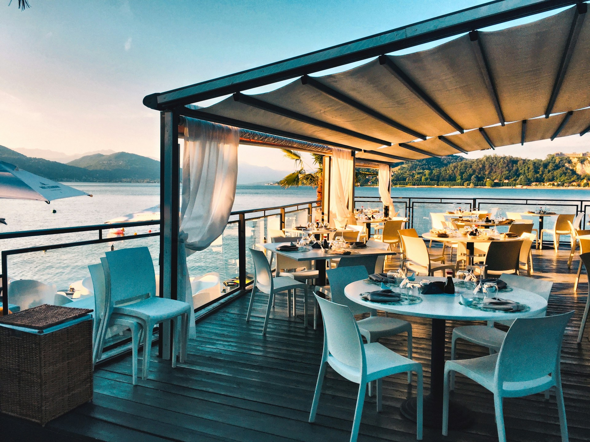

RESTAURANT DESIGN SAMPLE 架空のレストラン「NAGORI」
ABOUT
余韻まで、料理にする。
静かな夜のレストラン。
火入れの音、立ち上がる香り、窓辺に落ちるやわらかな光。
NAGORIは、料理の前後に流れる時間まで味わうための架空のレストランです。
近郊の畑から届く野菜と、その日に選ぶ食材。
いつもの夜にも、節目の会食にも。
肩肘張らずに楽しめる一席をご提案します。

PARTY
大切な人と囲む、
記憶に残るテーブル。
誕生日のお祝いや、久しぶりに集まる仲間との食事。
特別な日の会話を、料理がそっとつなぎます。
少人数での会食から、賑やかな集まりまで。
空間と料理を一緒に紹介する、パーティプランのサンプルです。
SCENE
【ご利用シーンのイメージ】
記念日のお祝い ／ ご家族の会食 ／ 友人との集まり
写真を選ぶと拡大できます
FAQ
よくいただくご質問
予約について
Q.このサイトから予約できますか？
A.
このページは架空のレストランのデザインサンプルです。実際のご予約・お問い合わせは受け付けていません。
Q.予約ボタンを押すとどうなりますか？
A.
ページ内のサンプル案内を表示します。外部への送信や電話発信は行いません。
お食事・メニューについて
Q.掲載されている料理は提供されていますか？
A.
料理写真はイメージ用の素材写真です。実際の店舗や提供メニューを紹介するものではありません。
Q.アレルギーについて相談できますか？
A.
実店舗のサイトでは、対応可能な内容と相談方法をこの位置に案内する構成です。このサンプルでは相談は受け付けていません。
お支払いについて
Q.料金や支払い方法を教えてください。
A.
実際の料金・決済機能は設定していません。正式な店舗情報に合わせて案内するためのサンプル欄です。
ご利用について
Q.服装や利用時の注意事項はありますか？
A.
店舗ごとのルールを分かりやすく案内するための表示サンプルです。実在店舗の規定を示すものではありません。
お子様・設備について
Q.お子様と一緒に利用できますか？
A.
お子様向けの対応や設備を紹介する項目のサンプルです。実際の設備・サービスを保証するものではありません。
アクセス ACCESS
NLOCATION SAMPLE実在する所在地・地図ではありません
- 店名
- RESTAURANT NAGORI（架空）
- 所在地
- 所在地：サンプル表示（架空）
- 営業時間
- 店舗情報の表示サンプル
ご予約・お問い合わせ CONTACT
大切なひと時のはじまりに。
ご予約・お問い合わせの案内を、ここに。
電話番号（表示例） XXX-XXXX-XXXX
こちらはデザイン確認用のサンプルです。
実際の予約・問い合わせ・外部送信はできません。